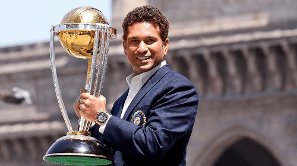

1) Virat Kohli

Virat Kohli is a professional Indian cricketer and the current captain of the Indian national team. He is considered one of the best batsmen in the world and has numerous records to his name. Kohli made his international debut in 2008 and quickly established himself as a top-order batsman. He has a strong aggressive playing style and is known for his fitness and work ethic. Kohli has been the recipient of many awards, including the Sir Garfield Sobers Trophy for ICC ODI Player of the Year in 2017, and 2018. He has also been honored with the ICC ODI Player of the Year award in 2012, 2017, 2018, and 2019.
2) MS Dhoni

Mahendra Singh Dhoni, commonly known as MS Dhoni, is a former Indian cricketer and captain of the Indian national team. He is considered one of the greatest cricketers in the history of the game and is known for his calm and composed leadership style. Dhoni made his international debut in December 2004 and went on to captain the Indian team for over a decade. Under his captaincy, India won the 2007 ICC World Twenty20, the 2010 Asia Cup, the 2010 and 2016 Asia Cup, and the 2007-08 Commonwealth Bank Series.
3) AB De Villiers
AB de Villiers, commonly known as ABD, is a retired South African cricketer and former captain of the South African national team. He is considered one of the best batsmen in the world and is known for his aggressive and unorthodox playing style. De Villiers made his international debut in December 2004 and went on to become one of the most successful and popular cricketers of his generation. He is widely regarded as one of the best batsmen in the world and one of the greatest ODI players of all time.
4) Chris Gayle

Chris Gayle is a West Indian cricketer who is considered one of the most destructive batsmen in the sport. He is a left-handed opening batsman and has represented teams such as the West Indies, Jamaica, and Royal Challengers Bangalore. Gayle is the first player to score a triple century in Tests, a double century in ODIs, and a century in Twenty20 Internationals. He also holds the record for the fastest century in World Twenty20 and the highest individual score in Twenty20 Internationals. Gayle is known for his aggressive playing style and powerful hitting.
5) Sachin Tendulkar
Sachin Tendulkar is considered one of the greatest cricketers of all time. He is a former Indian cricketer and captain, widely regarded as one of the greatest batsmen in the history of cricket. He is the highest run scorer of all time in International cricket. Tendulkar has scored over 34,000 runs in international cricket, including 100 centuries, and is the only player to score a double century in ODI cricket. He has also won numerous awards for his performances, including the Bharat Ratna, India's highest civilian award in 2013.